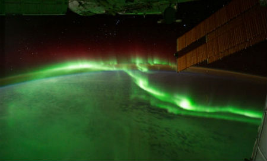
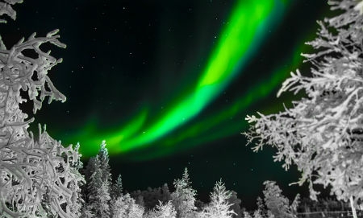

Welcome to our webpage "Aurora hunting" here we showcase some of our images from the Aurora Borealis and information
as to what causes these amazing sights. For those interested we offer special tours in the north of Sweden where you will
be accompanied by experienced guides and get hands on experience in photographing the Northren Lights.

Aurora Austrialis from the ISS
The picture above shows the aurora as seen from the International Space Station, it truely shows how large of a phenomenon
it is. While perhaps not quite as grandiose, the view from the ground is each and everytime a unique experience.

Green northren lights seen through frozen trees.
"We've been wanting to see the Northren Lights for so long and finally made the time for it. The location was
absolutely breathtaking we had an amazing time"
Emma, from Chicago
"The guides were very knowledgable and showed us some amazing sights during the day and helped us capture great
pictures of the Aurora Borealis. We learned a lot and would highly recommend this trip to anyone else."
Charles, from Luxembourg
"Everyone had a great time, we saw truely magnificent sights and the guides showed us the best locations to observe
the Northern Lights. The pictures we had taken arrived a few days later and were professionally edited."